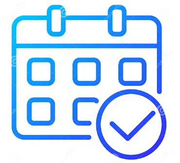

Tu navegador no soporta la reproducción de audio.
Tu navegador no soporta el elemento de video.
Tu navegador no soporta el elemento de video.

Confirmación
Ubicación
Confirmar a Nayeli
Confirmar a David